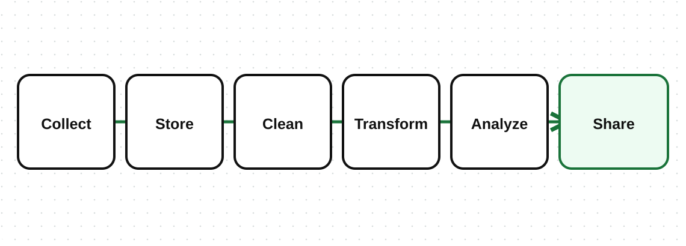
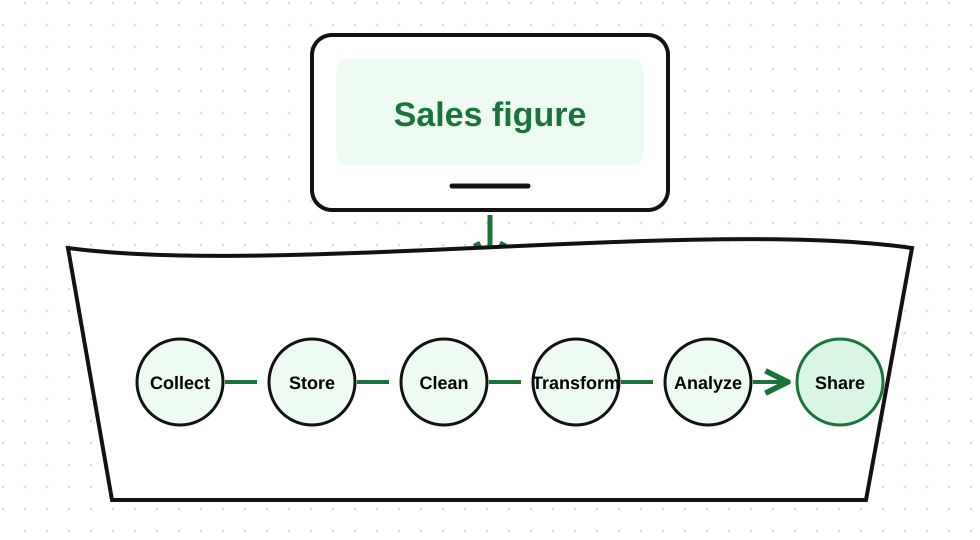

The sales figure on a manager's dashboard this morning began three weeks ago as a digital wallet payment for a sack of rice. Between those two moments it was moved, stored, cleaned, reshaped, and summarized, usually by systems nobody in that meeting has ever seen. Data does not exist in one single place. It moves through systems and stages before it becomes useful.
Organizations store data in different systems depending on purpose and scale.
The difference that matters is what each one is for. A database is built to record what is happening right now, one transaction at a time. A warehouse is built to answer questions about the last three years. Ask a database a three-year question and you will slow down the shop it is running.
A data pipeline is the path data follows from its source to its final use.

Each stage has a purpose:
Collect - gather data from apps, forms, sensors, or systems
Store - save it in a database, warehouse, or file
Clean - fix missing values, duplicates, and errors
Transform - reshape data into a useful format
Analyze - explore patterns and answer questions
Share - present results in reports or dashboards
Follow the payment from the top of the lesson.
Six stages, and the number on the dashboard is the only one anybody in that meeting will ever see.
